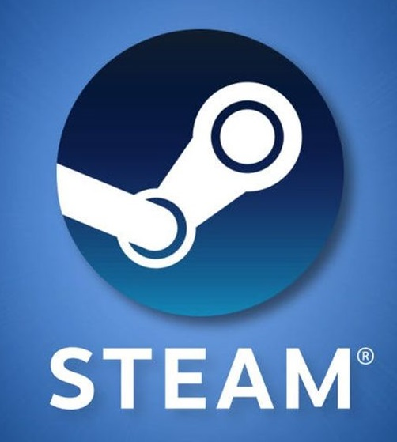

"UMA OBRA-
PRIMA MODERNA
MULTIJOGADOR."
DESTRUCTOID

JOGUE GRATUITAMENTE
BAIXE NO STEAM
JUNTE-SE À
BATALHA DOS
ANCESTRAIS
Todos os dias, milhões de jogadores ao redor do mundo entram na batalha como um dos mais de 100 heróis de Dota em uma batalha entre equipes de cinco jogadores. Dota 2 é o jogo multijogador de ação e estratégia em tempo real mais profundo já feito, e há sempre uma nova estratégia ou tática a ser descoberta. É completamente gratuito para jogar e assim sempre será — comece a defender o seu Ancestral já.
CONFIRA AS NOVIDADES
QUEM VOCÊ
ESCOLHERÁ?
De engenhosos magos a brutamontes destemidos, passando por rebeldes astutos, a gama de heróis do Dota 2 é enorme e incrivelmente diversa. Lance habilidades incríveis e Ultimates devastadoras no seu caminho para a vitória.
VER TODOS HERÓIS
O CIRCUITO
PROFISSIONAL
DE DOTA
Quando não estiver subindo nas classificações, você pode aprender com os melhores: o Circuito Profissional de Dota apresenta uma competição do mais alto nível de Dota 2, com transmissão regular pelo cliente do jogo, na Twitch e Steam.TV. Tudo isso culmina no maior campeonato de eSports do mundo, o International — um evento profissional de Dota 2 que você não pode deixar de acompanhar.